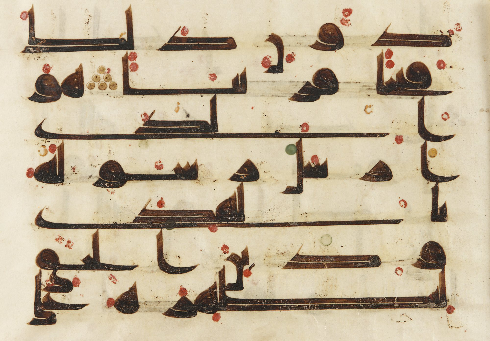

Every mark is a lesson.
More than a thousand years ago, scribes put red dots on the Quran so readers could say each word right. We add the next layer: what each word means, and why it is written that way. Free, from the first letter.
Free. No sign-up. No ads.
